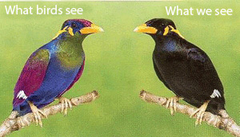
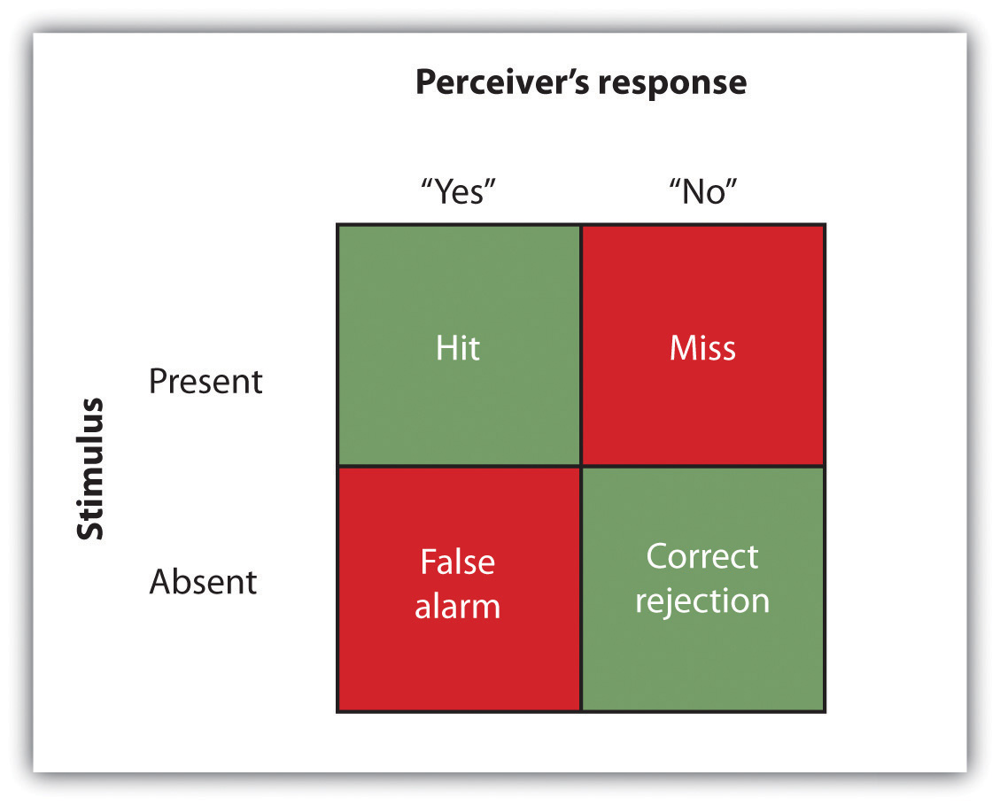

Humans possess powerful sensory capacities that allow us to sense the kaleidoscope of sights, sounds, smells, and tastes that surround us. Our eyes detect light energy and our ears pick up sound waves. Our skin senses touch, pressure, hot, and cold. Our tongues react to the molecules of the foods we eat, and our noses detect scents in the air. The human perceptual system is wired for accuracy, and people are exceedingly good at making use of the wide variety of information available to them (Stoffregen & Bardy, 2001).Stoffregen, T. A., & Bardy, B. G. (2001). On specification and the senses. Behavioral and Brain Sciences, 24(2), 195–261.
In many ways our senses are quite remarkable. The human eye can detect the equivalent of a single candle flame burning 30 miles away and can distinguish among more than 300,000 different colors. The human ear can detect sounds as low as 20 hertz (vibrations per second) and as high as 20,000 hertz, and it can hear the tick of a clock about 20 feet away in a quiet room. We can taste a teaspoon of sugar dissolved in 2 gallons of water, and we are able to smell one drop of perfume diffused in a three-room apartment. We can feel the wing of a bee on our cheek dropped from 1 centimeter above (Galanter, 1962).Galanter, E. (1962). Contemporary Psychophysics. In R. Brown, E. Galanter, E. H. Hess, & G. Mandler (Eds.), New directions in psychology. New York, NY: Holt, Rinehart and Winston.
To get an idea of the range of sounds that the human ear can sense, try testing your hearing here:
Figure 4.2

The dog’s highly sensitive sense of smell comes in useful in searches for missing persons, explosives, foods, and drugs.
Source: Photo courtesy of Harald Dettenborn, http://commons.wikimedia.org/wiki/File:Msc2010_dett_0036.jpg.
Although there is much that we do sense, there is even more that we do not. Dogs, bats, whales, and some rodents all have much better hearing than we do, and many animals have a far richer sense of smell. Birds are able to see the ultraviolet light that we cannot (see Figure 4.3 "Ultraviolet Light and Bird Vision") and can also sense the pull of the earth’s magnetic field. Cats have an extremely sensitive and sophisticated sense of touch, and they are able to navigate in complete darkness using their whiskers. The fact that different organisms have different sensations is part of their evolutionary adaptation. Each species is adapted to sensing the things that are most important to them, while being blissfully unaware of the things that don’t matter.
Figure 4.3 Ultraviolet Light and Bird Vision
Because birds can see ultraviolet light but humans cannot, what looks to us like a plain black bird looks much different to a bird.
Source: Adapted from Fatal Light Awareness Program. (2008). Our research program. Retrieved from http://www.flap.org/research.htm.
PsychophysicsIs the branch of psychology that studies the effects of physical stimuli on sensory perceptions and mental states. is the branch of psychology that studies the effects of physical stimuli on sensory perceptions and mental states. The field of psychophysics was founded by the German psychologist Gustav Fechner (1801–1887), who was the first to study the relationship between the strength of a stimulus and a person’s ability to detect the stimulus.
The measurement techniques developed by Fechner and his colleagues are designed in part to help determine the limits of human sensation. One important criterion is the ability to detect very faint stimuli. The absolute thresholdThe intensity of a stimulus that allows an organism to just barely detect it. of a sensation is defined as the intensity of a stimulus that allows an organism to just barely detect it.
In a typical psychophysics experiment, an individual is presented with a series of trials in which a signal is sometimes presented and sometimes not, or in which two stimuli are presented that are either the same or different. Imagine, for instance, that you were asked to take a hearing test. On each of the trials your task is to indicate either “yes” if you heard a sound or “no” if you did not. The signals are purposefully made to be very faint, making accurate judgments difficult.
The problem for you is that the very faint signals create uncertainty. Because our ears are constantly sending background information to the brain, you will sometimes think that you heard a sound when none was there, and you will sometimes fail to detect a sound that is there. Your task is to determine whether the neural activity that you are experiencing is due to the background noise alone or is a result of a signal within the noise.
The responses that you give on the hearing test can be analyzed using signal detection analysis. Signal detection analysisA technique used to determine the ability of the perceiver to separate true signals from background noise. is a technique used to determine the ability of the perceiver to separate true signals from background noise (Macmillan & Creelman, 2005; Wickens, 2002).Macmillan, N. A., & Creelman, C. D. (2005). Detection theory: A user’s guide (2nd ed). Mahwah, NJ: Lawrence Erlbaum Associates; Wickens, T. D. (2002). Elementary signal detection theory. New York, NY: Oxford University Press. As you can see in Figure 4.4 "Outcomes of a Signal Detection Analysis", each judgment trial creates four possible outcomes: A hit occurs when you, as the listener, correctly say “yes” when there was a sound. A false alarm occurs when you respond “yes” to no signal. In the other two cases you respond “no”—either a miss (saying “no” when there was a signal) or a correct rejection (saying “no” when there was in fact no signal).
Figure 4.4 Outcomes of a Signal Detection Analysis
Our ability to accurately detect stimuli is measured using a signal detection analysis. Two of the possible decisions (hits and correct rejections) are accurate; the other two (misses and false alarms) are errors.
The analysis of the data from a psychophysics experiment creates two measures. One measure, known as sensitivity, refers to the true ability of the individual to detect the presence or absence of signals. People who have better hearing will have higher sensitivity than will those with poorer hearing. The other measure, response bias, refers to a behavioral tendency to respond “yes” to the trials, which is independent of sensitivity.
Imagine for instance that rather than taking a hearing test, you are a soldier on guard duty, and your job is to detect the very faint sound of the breaking of a branch that indicates that an enemy is nearby. You can see that in this case making a false alarm by alerting the other soldiers to the sound might not be as costly as a miss (a failure to report the sound), which could be deadly. Therefore, you might well adopt a very lenient response bias in which whenever you are at all unsure, you send a warning signal. In this case your responses may not be very accurate (your sensitivity may be low because you are making a lot of false alarms) and yet the extreme response bias can save lives.
Another application of signal detection occurs when medical technicians study body images for the presence of cancerous tumors. Again, a miss (in which the technician incorrectly determines that there is no tumor) can be very costly, but false alarms (referring patients who do not have tumors to further testing) also have costs. The ultimate decisions that the technicians make are based on the quality of the signal (clarity of the image), their experience and training (the ability to recognize certain shapes and textures of tumors), and their best guesses about the relative costs of misses versus false alarms.
Although we have focused to this point on the absolute threshold, a second important criterion concerns the ability to assess differences between stimuli. The difference threshold (or just noticeable difference [JND])The change in a stimulus that can just barely be detected by the organism., refers to the change in a stimulus that can just barely be detected by the organism. The German physiologist Ernst Weber (1795–1878) made an important discovery about the JND—namely, that the ability to detect differences depends not so much on the size of the difference but on the size of the difference in relationship to the absolute size of the stimulus. Weber’s lawJust noticeable difference of a stimulus is a constant proportion of the original intensity of the stimulus. maintains that the just noticeable difference of a stimulus is a constant proportion of the original intensity of the stimulus. As an example, if you have a cup of coffee that has only a very little bit of sugar in it (say 1 teaspoon), adding another teaspoon of sugar will make a big difference in taste. But if you added that same teaspoon to a cup of coffee that already had 5 teaspoons of sugar in it, then you probably wouldn’t taste the difference as much (in fact, according to Weber’s law, you would have to add 5 more teaspoons to make the same difference in taste).
One interesting application of Weber’s law is in our everyday shopping behavior. Our tendency to perceive cost differences between products is dependent not only on the amount of money we will spend or save, but also on the amount of money saved relative to the price of the purchase. I would venture to say that if you were about to buy a soda or candy bar in a convenience store and the price of the items ranged from $1 to $3, you would think that the $3 item cost “a lot more” than the $1 item. But now imagine that you were comparing between two music systems, one that cost $397 and one that cost $399. Probably you would think that the cost of the two systems was “about the same,” even though buying the cheaper one would still save you $2.
If you study Figure 4.5 "Absolute Threshold", you will see that the absolute threshold is the point where we become aware of a faint stimulus. After that point, we say that the stimulus is conscious because we can accurately report on its existence (or its nonexistence) better than 50% of the time. But can subliminal stimuliStimuli that are below the absolute threshold and of which we are not conscious. (events that occur below the absolute threshold and of which we are not conscious) have an influence on our behavior?
Figure 4.5 Absolute Threshold

As the intensity of a stimulus increases, we are more likely to perceive it. Stimuli below the absolute threshold can still have at least some influence on us, even though we cannot consciously detect them.
A variety of research programs have found that subliminal stimuli can influence our judgments and behavior, at least in the short term (Dijksterhuis, 2010).Dijksterhuis, A. (2010). Automaticity and the unconscious. In S. T. Fiske, D. T. Gilbert, & G. Lindzey (Eds.), Handbook of social psychology (5th ed., Vol. 1, pp. 228–267). Hoboken, NJ: John Wiley & Sons. But whether the presentation of subliminal stimuli can influence the products that we buy has been a more controversial topic in psychology. In one relevant experiment, Karremans, Stroebe, and Claus (2006)Karremans, J. C., Stroebe, W., & Claus, J. (2006). Beyond Vicary’s fantasies: The impact of subliminal priming and brand choice. Journal of Experimental Social Psychology, 42(6), 792–798. had Dutch college students view a series of computer trials in which a string of letters such as BBBBBBBBB or BBBbBBBBB were presented on the screen. To be sure they paid attention to the display, the students were asked to note whether the strings contained a small b. However, immediately before each of the letter strings, the researchers presented either the name of a drink that is popular in Holland (Lipton Ice) or a control string containing the same letters as Lipton Ice (NpeicTol). These words were presented so quickly (for only about one fiftieth of a second) that the participants could not see them.
Then the students were asked to indicate their intention to drink Lipton Ice by answering questions such as “If you would sit on a terrace now, how likely is it that you would order Lipton Ice,” and also to indicate how thirsty they were at the time. The researchers found that the students who had been exposed to the “Lipton Ice” words (and particularly those who indicated that they were already thirsty) were significantly more likely to say that they would drink Lipton Ice than were those who had been exposed to the control words.
If it were effective, procedures such as this (we can call the technique “subliminal advertising” because it advertises a product outside awareness) would have some major advantages for advertisers, because it would allow them to promote their products without directly interrupting the consumers’ activity and without the consumers’ knowing they are being persuaded. People cannot counterargue with, or attempt to avoid being influenced by, messages received outside awareness. Due to fears that people may be influenced without their knowing, subliminal advertising has been legally banned in many countries, including Australia, Great Britain, and the United States.
Although it has been proven to work in some research, subliminal advertising’s effectiveness is still uncertain. Charles Trappey (1996)Trappey, C. (1996). A meta-analysis of consumer choice and subliminal advertising. Psychology and Marketing, 13, 517–530. conducted a meta-analysis in which he combined 23 leading research studies that had tested the influence of subliminal advertising on consumer choice. The results of his meta-analysis showed that subliminal advertising had a negligible effect on consumer choice. And Saegert (1987, p. 107)Saegert, J. (1987). Why marketing should quit giving subliminal advertising the benefit of the doubt. Psychology and Marketing, 4(2), 107–120. concluded that “marketing should quit giving subliminal advertising the benefit of the doubt,” arguing that the influences of subliminal stimuli are usually so weak that they are normally overshadowed by the person’s own decision making about the behavior.
Taken together then, the evidence for the effectiveness of subliminal advertising is weak, and its effects may be limited to only some people and in only some conditions. You probably don’t have to worry too much about being subliminally persuaded in your everyday life, even if subliminal ads are allowed in your country. But even if subliminal advertising is not all that effective itself, there are plenty of other indirect advertising techniques that are used and that do work. For instance, many ads for automobiles and alcoholic beverages are subtly sexualized, which encourages the consumer to indirectly (even if not subliminally) associate these products with sexuality. And there is the ever more frequent “product placement” techniques, where images of brands (cars, sodas, electronics, and so forth) are placed on websites and in popular television shows and movies. Harris, Bargh, & Brownell (2009)Harris, J. L., Bargh, J. A., & Brownell, K. D. (2009). Priming effects of television food advertising on eating behavior. Health Psychology, 28(4), 404–413. found that being exposed to food advertising on television significantly increased child and adult snacking behaviors, again suggesting that the effects of perceived images, even if presented above the absolute threshold, may nevertheless be very subtle.
Another example of processing that occurs outside our awareness is seen when certain areas of the visual cortex are damaged, causing blindsightA condition brought on by damage to the visual cortex, in which people are unable to consciously report on visual stimuli but nevertheless are able to accurately answer questions about what they are seeing., a condition in which people are unable to consciously report on visual stimuli but nevertheless are able to accurately answer questions about what they are seeing. When people with blindsight are asked directly what stimuli look like, or to determine whether these stimuli are present at all, they cannot do so at better than chance levels. They report that they cannot see anything. However, when they are asked more indirect questions, they are able to give correct answers. For example, people with blindsight are able to correctly determine an object’s location and direction of movement, as well as identify simple geometrical forms and patterns (Weiskrantz, 1997).Weiskrantz, L. (1997). Consciousness lost and found: A neuropsychological exploration. New York, NY: Oxford University Press. It seems that although conscious reports of the visual experiences are not possible, there is still a parallel and implicit process at work, enabling people to perceive certain aspects of the stimuli.